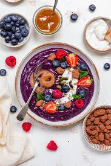

Home
Smoothie Bowl

Quick and easy blueberry smoothie bowl!
Ingredients
Original recipe yelds 1 serving
1 cup frozen blueberries
½ banana
2 tablespoons water
1 tablespoon cashew butter
1 teaspoon vanilla extract
½ banana, sliced
1 tablespoon sliced almonds
1 tablespoon unsweetened shredded coconut
Steps
Gather all the ingredients.
Blend blueberries, 1/2 banana, water, cashew butter, and vanilla extract together in a blender until smooth
Pour into a medium bowl.
Top smoothie with sliced banana, almonds, and coconut
Enjoy!
Conversor
From:
Grams (g)
Milliliters (ml)
Cups
Tablespoons (tbsp)
Teaspoons (tsp)
Ounces (oz)
Pounds (lb)
To:
Grams (g)
Milliliters (ml)
Cups
Tablespoons (tbsp)
Teaspoons (tsp)
Ounces (oz)
Pounds (lb)
Result: